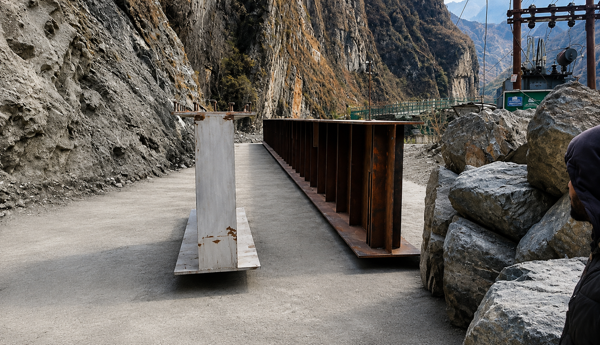
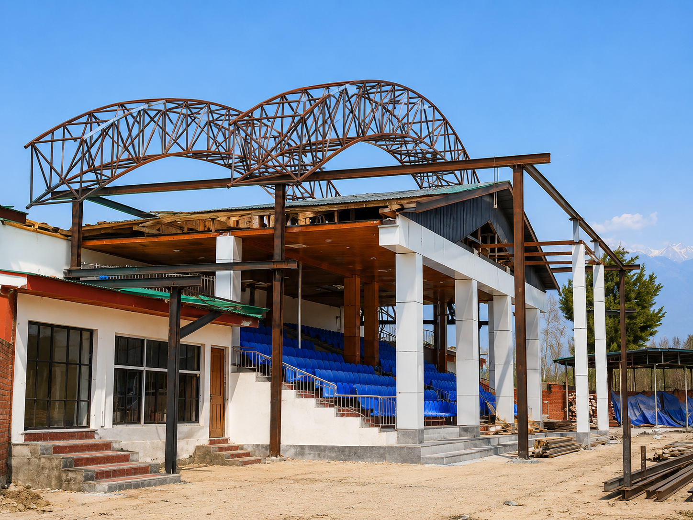
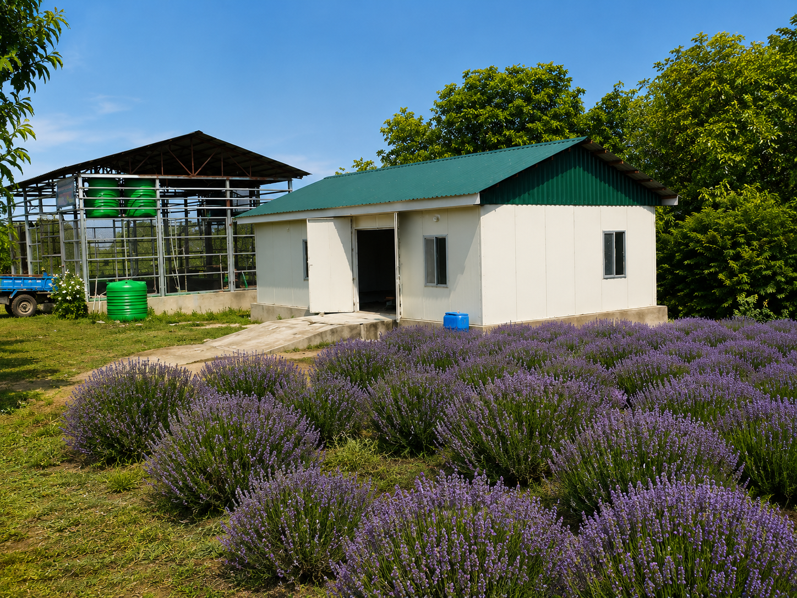
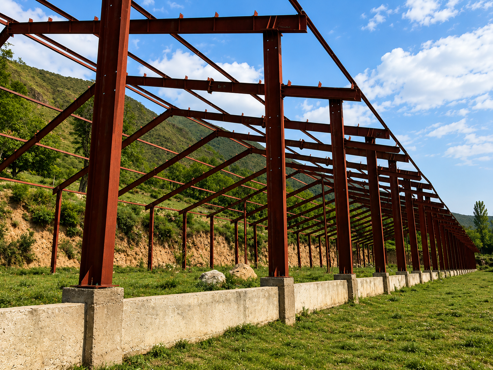
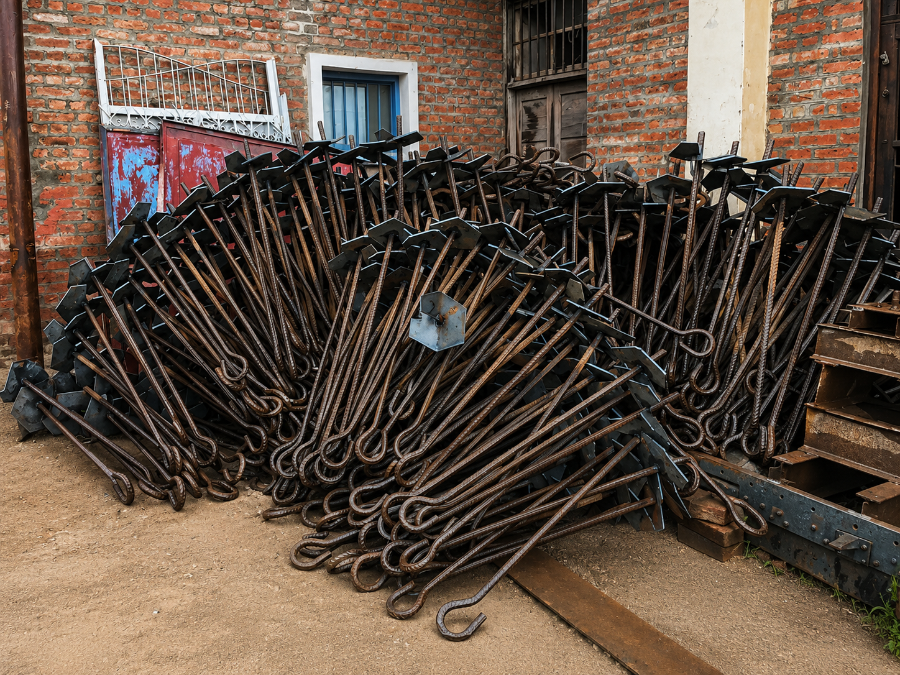

Company established
Steel Syndicate begins operations at Sanat Nagar Industrial Estate, Srinagar.
EST. 1996 · SRINAGAR, J&K
Premium steel fabrication and engineering solutions for the infrastructure that moves our region forward.

OUR FOUNDATION
Established in Sanat Nagar Industrial Estate, Srinagar, Steel Syndicate has earned a reputation for reliable, durable steel solutions. Every assignment is shaped by precision engineering, skilled workmanship and exacting quality control.
We serve industrial, commercial, residential and government projects across Jammu & Kashmir and beyond.
Talk to our team →OUR JOURNEY
From a focused workshop in Srinagar to a trusted partner for complex steel engineering, our growth has been shaped by discipline, quality and long-term relationships.
Discover our story →Steel Syndicate begins operations at Sanat Nagar Industrial Estate, Srinagar.
Capacity grows to serve larger structural steel and custom fabrication work.
Our work supports government and regional infrastructure development.
Broader capabilities for industrial structures and prefabricated solutions.
A leading regional steel engineering company with enduring Kashmiri roots.
WHAT WE DO
Reliable frameworks and custom structures built for strength.
Precise heavy fabrication for critical infrastructure.
Engineered spans for industrial and commercial buildings.
Efficient, durable structures ready for installation.
High-tech agricultural structures designed to perform.
Custom metalwork that balances security and finish.
PROJECT GALLERY
Explore Steel Syndicate’s core project categories. Select a category to view its full project gallery.

GIRDERS & BRIDGES · 12 PROJECT PHOTOSGirder Bridges Explore gallery ↗
ROOF TRUSS · 10 PROJECT PHOTOSRoof Truss Explore gallery ↗ AGRICULTURE · 5 PROJECT PHOTOSGreenhouses & Shade Net Structures Explore gallery ↗
AGRICULTURE · 5 PROJECT PHOTOSGreenhouses & Shade Net Structures Explore gallery ↗

PREFABRICATED · 5 PROJECT PHOTOSPrefabricated Huts Explore gallery ↗
STRUCTURAL STEEL · 4 PROJECT PHOTOSSteel Structures Explore gallery ↗ ARCHITECTURAL METALWORK · 8 PROJECT PHOTOSGates & Grills Explore gallery ↗
ARCHITECTURAL METALWORK · 8 PROJECT PHOTOSGates & Grills Explore gallery ↗
 INFRASTRUCTURETubular Poles View project ↗
INFRASTRUCTURETubular Poles View project ↗

CUSTOM FABRICATION · 7 PROJECT PHOTOSCustom Steel Components Explore gallery ↗A WORD FROM OUR LEADERSHIP
“Quality, integrity, and commitment create lasting value.”
Our work is built around precision, safety and the confidence our clients place in us.
Tufail MirManaging PartnerWHY STEEL SYNDICATE
CONTACT US
Tell us about your next project. Our team will be in touch to discuss the strongest way forward.
Workshop53-A Industrial Estate Barzulla, Sanat Nagar, Srinagar, J&K
Call+91 99061 82102